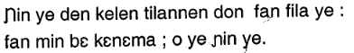
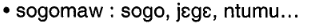

This page brings together basic information about the Latin script and its use for the Bamanan (Bambara) language. It aims to provide a brief, descriptive summary of the modern, printed orthography and typographic features, and to advise how to write Bamanan using Unicode.
Bamakanan text often contains French words or spellings, but the characters needed for French words are not covered here. Nor is the N'Ko alphabet covered here (see N'Ko).
Accents are used for tone marks to show the basic information only. Bamanan tones involve complicated contextual rules. These are not transcribed in detail. Also tone marks are not used for syllables that follow an initial indication, and the high tone is usually not marked unless it needs to be for clarity.
In addition, Bamanan has numerous dialects and variant pronunciations, each of which may lead to differences in pronunciation or spelling. The pronunciation in this document is generally based on the the standard Bamanan dialect of Bamako.
Select part of this sample text to show a list of characters, with links to more details.
Change size: 24px
Hadamaden bɛɛ danmakɛɲɛnen bɛ bange, danbe ni josira la. Hakili ni taasi bʼu bɛɛ la, wa u ka kan ka badenɲasira de waleya u ni ɲɔgɔn cɛ.
Bɛɛ ka kan josira ni hɔrɔnɲasira dantigɛlen ninnu bɛɛ la, wolomali fan si t’a la, janko siyawoloma, fari jɛya n’a finɲa, cɛya ni musoya, kan, diinɛ, politikisira ni miirisira jan o jan, fasowoloma ni sɛrɛwoloma, sɔrɔ ni bonda ni jɔyɔrɔwoloma fan o fan.
Wa mɔgɔ tɛ minɛ i bɔyɔrɔ ma, o dabolo mana kɛ fɛn o fɛn ye politiki ni sariya la ani diɲɛ kɔnɔ: o ka kɛ jamana wali dugukolo yɛrɛmahɔrɔn ye, wali kalifafen, wali maralen, wali dankari bɛ min ka setigiya la.
The Bamanan language is used as a lingua franca and one of the national languages of Mali. Concentrated in southwest Mali and southern and eastern Guinea. it is also spoken in Ivory Coast, Liberia, Sierra Leone, Senegal, Gambia, Guinea-Bissau and Mauritania. There are around 15 million people, and is a first language for around a third of those people. There are also pockets of usage in other countries. It is one of the Mande group of languages.
Bamanan is mostly written in the Latin orthography, although it may also be written using N'Ko. Literacy rates are not high.
Bamanan is also known as Bamana or Bambara.
The language was written using the Latin script during the French occupation, but a set of spelling conventions were introduced in 1966/67. These introduced the use of ŋ rather than ny, and ŋ instead of ng or nk.
Unicode 17 has 10 basic dedicated Latin blocks, comprising 1,268 characters, plus 3 more additional blocks dedicated to phonetic notations, comprising a further 288 characters.
The Latin script is an alphabet. It is largely phonetic in nature, where each letter represents a basic sound, and all vowel sounds are written using letters. See the table to the right for a brief overview of features for the modern Bamanan orthography using the Latin script.
Bamanan text runs left-to-right in horizontal lines. Words are separated by spaces. The orthography is bicameral. The visual forms of letters don't usually interact.
Tone is not usually indicated outside of dictionaries and education materials, but it if is, another 21 accented characters are used (counting lowercase only). Of these, 15 can be represented as atomic characters. Otherwise, and in decomposed text, letters are combined with one of 3 diacritics (maybe four).
Nasalisation is indicated by a syllable-final letter n.
Standalone vowels are written using ordinary vowel letters and no special arrangements.
The following represents the repertoire of the Bamako Bamanan dialect.
Click on the sounds to reveal locations in this document where they are mentioned.
Phones in a lighter colour are non-native or allophones. Source Wikipedia.
Vowel sounds
Plain vowels
Consonant sounds
labial
alveolar
post-
alveolar
retroflex
palatal
velar
glottal
stop
pb
td
kɡɡʷ
affricate
t͡ʃd͡ʒ
fricative
f
sz
ʃ
ɣ
h
nasal
m
n
ɲ
ŋ
approximant
w
l
j
trill/flap
r
Tone
tbd
Structure
Typical Bamanan syllable types include the following.
CV is the standard form. Words are commonly CVCV.
bana
CVV indicates a long vowel. The long vs. short vowel distinction is phonemically distinctive.
baana
CVC occurs where the vowel is nasalised, using a syllable-final n.
denkɛ
V occurs at the beginning of a word.
abada
CCV/CCVV where a consonant is pre-nasalised, indicated by preceding it with n.
nsaajɛ
Is there a syllabic nasal?
Is gb a feature of Bamana, and if so how is it written?
Vowels
Vowel summary table
This table summarises only basic vowel to character assignments. Click on the phonetic transcriptions for more detail.
Bamanan vowels are mostly simple letters, but on rare occasions accent marks are used to indicate tone, and those are shown to the right. Most of the combinations of letter and tone are atomic characters, but a number combine a base consonant with a combining mark .
The Bamanan alphabet has 7 vowel letters, duplicated in upper- and lowercase. Long vowels are indicated by doubling the vowel letter.
i,u,e,o,ɛ,ɔ,aI,U,E,O,Ɛ,Ɔ,A
Tone is not usually indicated outside of dictionaries and education materials, but it if is, another 21 accented characters are used (counting lowercase only). Of these, 15 can be represented as atomic characters. Otherwise, and in decomposed text, letters are combined with one of 3 diacritics (maybe four). See tones.
Vowel length
Long and short vowel sounds are phonemically distinctive, and Bamanan distinguishes between them by doubling the long vowels.
eg.
laada
Long nasalised vowels do exist, but they are very raregd,19.
eg.
mɛɛn
In some cases a long vowel may be a result of phonological changes where a consonant is lost, or may be written to express emphasis (eg. wari caaman), or may be a vowel with a low-high tone sequence.gd,19
Nasalisation
Bamanan vowels can also be nasalised. To write a nasalised vowel, follow it by n.
eg.
bɛnba
Standalone vowels
Standalone vowels are written using ordinary vowel letters and no special arrangements.
eg.
abada
olu
Observation: Most word-initial standalone vowels seem to be 'a'. Not clear whether there are any word-medial standalone vowels.
Tones
Hausa uses 2 tones, high, and low, however, there is no strict requirement to mark tones, and usually they are not marked. Even if tone marks are used, they don't reflect the detailed contextual effects that apply, especially in flowing text (see below).
In spoken Bamanan, tones are useful for distinguishing words that are otherwise written the samecd.
cf.
ba bá river, streamba bà thousand
One exception tends to be the 2nd person and 3rd person pronouns, which are otherwise indistinguishable.
cf.
áa
Use of tones in transcriptions, dictionaries, etc. Tone marks do tend to be written in dictionaries or language-learning texts. Where tone is indicated, the high tone can be marked with 0301, but is commonly not marked unless the tone changes within a word. The low tone can be marked with 0300. An initial tone mark typically indicates the tones for all following vowels in a word, or until another tone mark appears, and so the mark is not repeated.
Typically, many of the vowel+tone combinations are expressed using precomposed characters, however precomposed alternatives are not available for all combinations. The basic set of characters needed to mark tones includes the following:
à,á,è,é,ì,í,ò,ó,ù,úɛ́,ɛ̀,ɔ́,ɔ̀́,̀
Long vowels may involve more than one tone, in which case one tone tends to be added to each vowel.
eg.
bàá
In some cases, a syllable containing a single vowel letter has a tone change that can be written using 030C .
eg.
bǎ
That would involve the following additional characters.
ǎ,ě,ǐ,ǒ,ǔɛ̌,ɔ̌̌
In fact, the phonetics of tones are more complicated than usually shown by the accent marks, especially in flowing text. For example, a word with 2 low tones marked usually has an unmarked high tone between them, some tonal sequences involve downsteps, etc. For more details, see Vydrinvv.
An additional low tone or downstep is also used in a grammatical role related to definitiveness. Vydrinvv uses the following example, where he represents the tone expressing definitiveness by a floating grave accent.
A page by UCLA represents this phonetically as a downstep when it occurs after a low vowel.
eg.
dingɛ
Vowel sounds to characters
This section maps Bamanan vowel sounds to common graphemes in the Latin orthography.
Tones are ignored. Uppercase letters are shown to the right.
Sounds listed as 'infrequent' are allophones, or sounds used for foreign words, etc. Light coloured characters occur infrequently.
i
Ivoweli
iː
vowelii
ĩ
vowelin
u
Uvowelu
Wconsonantwat the end of a word, to express a plural.
uː
voweluu
ũ
vowelun
e
Evowele
eː
vowelee
ẽ
vowelen
o
Ovowelo
oː
voweloo
õ
vowelon
ɛ
Ɛvowelɛ
ɛː
vowelɛɛ
ɛ̃
vowelɛn
ɔ
Ɔvowelɔ
ɔː
vowelɔɔ
ɔ̃
vowelɔn
a
Avowela
aː
vowelaa
ã
vowelan
Vowel absence
Vowel absence principally occurs either when a consonant is a syllable coda, or when a consonant is part of a consonant cluster.
Since this is an alphabet, the absence of vowel sounds in consonant clusters or after codas is marked simply by an absence of vowel letters. There is no special shaping or mark to indicate a consonant cluster. Examples:
eg.
ɲùman
ɲ,ù,m,a,n
abarka
a,b,a,r,k,a
Consonants
Consonant summary table
This table summarises only basic consonant to character assignments. Click on the phonetic transcriptions for more detail.
Consonants are written using letters. There are several digraphs, most of which are prenasalised consonants.
Vidrin observes that “in the intervocalic position, velar phonemes are not contrastive: [-g-], [-k-], [-ɣ-], [-x-] and even a zero consonant, -ø-, are allophones of a single phoneme.” Coleman adds that to represent this, “Latin-based orthographies vary widely in their preferred grapheme. One may often choose freely between g, k, or simply dropping the intervocalic velar (e.g., tága, táka versus táa ‘go’)”cdl
Pronunciation and consequent spelling of Bambara words may vary, influenced by dialect or sometimes other factors. The following are examples:
d and l may be interchangeable, eg. firewood may be either dɔgɔ or lɔgɔ.
the sound gʷ may be written as either g or gw.
f and p may be interchangeable in a few words.
Digraphs
sh,kh
sh represents the sound ʃ, where needed in Bamanan text. It is more common in some dialects than otherswbm, and may sometimes be written instead as sy.
ny may be preferred by some people instead of ɲ, although if not word-initial it can create ambiguities related to nasalisation of the previous vowel.
kh is used to represent the sound ɣ in loan words from other languageswbm.
Prenasalisation
Bamanan syllables may begin with a prenasalised stop or fricative. This may sometimes be spelled phonetically, eg. mb, but more frequently is written using just n, ie. nb.
eg.
npannbuuruntɔnncɔgɔnnsaajɛ
Consonant sounds to characters
This section maps Bamanan consonant sounds to common graphemes in the Latin orthography.
Uppercase letters are shown to the right.
Sounds listed as 'infrequent' are allophones, or sounds used for foreign words, etc. Light coloured characters occur infrequently.
p
Pconsonantp
m͡p
NPprenasalised consonantnp
b
Bconsonantb
m͡b
NBprenasalised consonantnb
t
Tconsonantt
n͡t
NTprenasalised consonantnt
t͡ʃ
Cconsonantc
ɲ͡tʃ
NCconsonantnc
d
Dconsonantd
d͡ʒ
Jconsonantj
k
Kconsonantk
ŋ͡k
NKconsonantnk
ɡ
Gconsonantg
ɡʷ
GconsonantgOften, especially before a, e, or ɛ, but never before i.
GWconsonantgw
f
Fconsonantf
m͡f
NFconsonantnf
s
Sconsonants
z
Zconsonantz
consonantsafter nasalised vowels or pre-nasalisation.
n͡z
NSprenasalised consonantns
ʃ
SHconsonantshloanword transliterations
n͡ʃ
NCprenasalised consonantnc
ɣ
GconsonantgSometimes between two identical vowels that are either a or ɔ (and occasionally o).
KHconsonantkhin loanword transliterations
h
Hconsonanth
m
Mconsonantm
n
Nconsonantn
ɲ
Ɲconsonantɲ
ŋ
Ŋconsonantŋ
ŋʷ
Ŋconsonantŋbefore ɛ.
w
Wconsonantw
r
Rconsonantr
l
Lconsonantl
j
Yconsonanty
◌̃
-n
bananku
Numbers, dates, currency, etc
European digits are used.
Text direction
Bamanan text runs left to right in horizontal lines.
Bamanan is bicameral, and applications may need to enable transforms to allow the user to switch between cases.
Typographic units
Word boundaries
Words are separated by spaces.
Compound words can be hyphenated.
eg.
ɲɛ-ji
Graphemes
No issues arise with grapheme selection.
Punctuation & inline features
Phrase & section boundaries
Bamanan uses regular ASCII punctuation.
phrase
,
;
:
sentence
.
?
!
As for French, it is common for a space to appear before the semicolon, colon and question mark punctuation. In French this is usually slightly smaller than a normal space, and lines should not be broken on either side of that space. For this, 202F is ideal.

An example of spaces occurring before semicolon and colon.
Bracketed text
Bamanan commonly uses ASCII parentheses to insert parenthetical information into text.
start
end
standard
(
)
Quotations & citations
Bamanan texts may use guillemets around quotations, but mostly use quotation marks. Of course, due to keyboard design, quotations may also be surrounded by ASCII double and single quote marks.
start
end
initial
“
”
nested
‘
’
alternative
«
»
Abbreviation, ellipsis & repetition
Bamanan words often elide vowels in a similar way to the English word "don't". For this, they use an apostrophe. A good character to use for this would be 02BC, but most of the time authors use the ASCII ' U+0027 APOSTROPHE, eg. compare:
cf.
A ye à fɔ.A y’à fɔ.
… can also be found in Bamanan texts.

An example of ellipsis.
Line & paragraph layout
Line breaking & hyphenation
Lines are generally broken between words.
Line-edge rules
As in almost all writing systems, certain punctuation characters should not appear at the end or the start of a line. The Unicode line-break properties help applications decide whether a character should appear at the start or end of a line.
The following list gives examples of typical behaviours for some of the characters used in Bamanan. Context may affect the behaviour of some of these and other characters.
Click/tap on the characters to show what they are.
“ ‘ ( « should not be the last character on a line.
” ’ ) » . , ; ! ? % should not begin a new line.
Text alignment & justification
Text alignment and justification follow the typical pattern for Latin script orthographies. Inter-word spaces provide the primary justification opportunities.